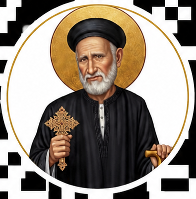

طلعت
📍 Khaled Ibn Al Walid، الحمرا الثانية
افتح اللوكيشن على Google Maps
للمغتربين في أسيوط
📍 Khaled Ibn Al Walid، الحمرا الثانية
افتح اللوكيشن على Google Maps📍 محمد علي مكارم، قسم ثان أسيوط
افتح اللوكيشن على Google Maps📍 أسيوط
افتح اللوكيشن على Google Maps📍 أسيوط
افتح اللوكيشن على Google Maps📍 أسيوط
افتح اللوكيشن على Google Maps📍 توفيق خشبة، الحمرا الثانية
افتح اللوكيشن على Google Maps📍 المحافظة، أسيوط
افتح اللوكيشن على Google Maps